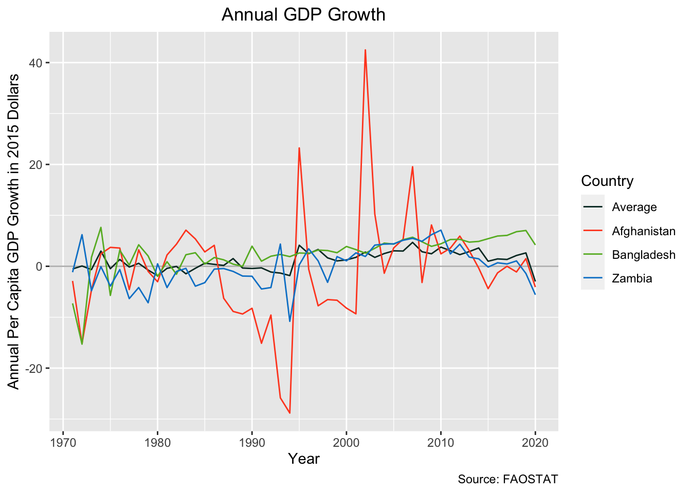

![]()
Code
# packages
library(tidyverse)
library(lubridate)
library(janitor)
library(tmap)
library(readr)
library(here)
library(tsibble)
library(stats)
library(slider)
library(patchwork)
library(knitr)
# Data
data("World")December 1, 2022
Climate denialism is slowly fading within the US. On August 15, 2022, The World Economic Forum noted that the current US congress had 7% fewer “climate deniers” than the previous session, which in turn, had 23% less climate deniers than the preceeding session. (“Climate Denial: Why It Happens and What To Do About It,” n.d.)
While climate denialism may be on the wane it is still a considerable force within American politics.(Brigham, n.d.) The denialists within the US maintain their beliefs in the face of mounting evidence.(“Scientific Consensus: Earth’s Climate Is Warming,” n.d.) So I have taken it upon myself to add to this mounting evidence and attempt show a link between temperature and national level economic indicators.
Note: I will be focusing on climate’s impact not on the cause of climate change itself. The correlation between mean temperatures and CO₂ readings from Mt. Mauna Loa in Hawaii are already well known and by themselves do not point to causation. Any more rigorous analysis is beyond my current data science skills, and so, I will leave the anthropocentric attribution to the IPCC.
I intend to run a number of regressions to see if I can explain any variability in national macroeconomic indicators with the variability in national average temperature. I.E. Can I see climate change’s impact on country level statistics?
All data used in this blog post was provided by the Food and Agriculture Organization of the United Nations.(“FAOSTAT,” n.d.) I will limit my analysis to the group of 49 countries designated as the least developed (LDC) by the United Nations.(“Least Developed Countries (LDCs) | Department of Economic and Social Affairs,” n.d.) These countries were chosen for this blog post because, according to the UN Development Project, the economic growth of LDCs is highly dependent on climate-sensitive sectors.(“Responding To Climate Change In Least Developed Countries | United Nations Development Programme,” n.d.) This high sensitivity will hopefully lead to a low p-value when regressing temperature on national level statistics.
The temperature data I will use to predict national indicators will be Degrees C ° above or below the 1951–1980 national mean.
The national level statistic I will try to predict in this blog post will be: Annual growth in per capita Gross Domestic Product denoted in 2015 USD. While I did attempt to use other metrics in my analysis, this metric seemed the most straightforward to blog about.
In my analysis I used the following models:
\[ Indictor(temp) = \beta_{1}(temp)_{t} \]
\[ Indictor(temp) = \beta_{1}(temp)_{t} + \beta_{2}(temp)_{t-1} + \beta_{3}(temp)_{t-2} \]
\[ Indictor(temp) = \beta_{1}(year) + \beta_{2}(temp)_{t} + \beta_{3}(temp)_{t-1} + \beta_{4}(temp)_{t-2} \]
The first model is a standard linear regression with a single coefficient.
The second model is a linear regression with two lagged temperature variables that represent the temperature one year and two years before. The thinking here is that temperature may have an effect on our indicator (GDP) in later years.
The third model is the same as the second except with an additional variable of year. I see in the temperature variable that it has an upward trend, likely due to climate change induced global warming. I worry that if the economic indicator also had a trend then a correlation could be spurious, so in the case that I found any strong high correlation in the first two models I would try and see if adding the time variable lowered the impact of the temperature predictor on the indicator in question.
My null hypothesis is that temperature has no effect on GDP and my alternative hypothesis is that temperature has an effect on GDP.
\[ H_{0}: 0 = \beta_{1} + \beta_{2} + \beta_{3} \]
\[ H_{1}: 0 \neq \beta_{1} + \beta_{2} + \beta_{3} \]
I will set my significance level to 0.01 which indicates a 1% risk of concluding that temperature is predictive when it is not. Even if I achieve a p-value below 0.01 I will have to do some additional validation because I will be regressing multiple models on 49 countries against a number of national level statistics I will be running more than 1,000 regressions. The chances that one of these will find a relationship is relatively high because of the sheer number of attempts.
The complete list of libraries, packages, and datasets used in this post can be found here:
Let’s read in and clean the data. This data can be downloaded from the FAOSTAT website. While this analysis can be performed on multiple different national level statistics, I chose to use National GDP in this blog post for simplicity. To export the CSVs found in this blog post use the Macro Indicators data portal for the indicators and the Temperature Change data portal for the temperature variable.
# read in the data
temp_raw <- read_csv(here("posts",
"2022-12-05-economic_climate_regression",
"FAOSTAT_temp.csv"))
indi_raw <- read_csv(here("posts",
"2022-12-05-economic_climate_regression",
"FAOSTAT_indicators.csv"))
# clean column names, remove unneeded columns, rename columns
temp_df <- temp_raw |>
clean_names() |>
select(area, year, value) |>
rename(country = area, temp = value)
# clean column names, remove unneeded columns, rename columns
indi_df <- indi_raw |>
clean_names() |>
select(area, year, item, value) |>
rename(country = area, indicator = value)
# create a single dataframe and lag variables to use for analysis
analysis_df <- left_join(indi_df, temp_df,
by = c("country", "year")) |>
group_by(country) |>
mutate(lag_1 = lag(temp, n = 1),
lag_2 = lag(temp, n = 2)) |>
ungroup()Let’s look at our data a little closer to make sure there are no surprises.
# filter World data to only LDCs
LDC_map <- left_join(World, analysis_df,
by = c("name" = "country")) |>
filter(!is.na(indicator))
# create a map
tm_shape(World) +
tm_polygons() +
tm_shape(LDC_map) +
tm_fill(col = "red") +
tm_layout(main.title = "Least Developed Countries",
main.title.position = "center")Wrangle the data
# create an average temperature and indicator column
ave_stats <- analysis_df |>
group_by(year) |>
summarize(indicator = mean(indicator),
temp = mean(temp, na.rm = TRUE)) |>
mutate(country = "Average") |>
relocate(country)
# filter to just three countries out of 49
country_stats <- analysis_df |>
filter(country %in% c("Afghanistan", "Bangladesh", "Zambia")) |>
select(-lag_1, -lag_2, -item)
# combine data into single dataframe for graphing
plot_df <- rbind(ave_stats, country_stats)
# change the levels for the legend order
plot_df$country <- as.factor(plot_df$country)
plot_df$country <- relevel(plot_df$country, "Average")
levels(plot_df$country)Graph of indicator (GDP)
# create a plot of GDP indicator over time
gdp_series <- ggplot(data = plot_df) +
geom_hline(yintercept = 0, color = c("grey")) +
geom_line(aes(x = year, y = indicator, color = country)) +
labs(y="Annual Per Capita GDP Growth in 2015 Dollars",
x="Year",
title="Annual GDP Growth",
caption = "Source: FAOSTAT") +
scale_colour_manual(name = "Country",
values = c("Average" = "#04332c",
"Afghanistan" = "#ff4c24",
"Bangladesh" = "#67b62c",
"Zambia" = "#0184cf")) +
theme(plot.title = element_text(hjust = 0.5))
gdp_series
Graph of Temperature
# create a plot of temperature over time
temp_series <- ggplot(data = plot_df) +
geom_hline(yintercept = 0, color = c("grey")) +
geom_line(aes(x = year, y = temp, color = country)) +
labs(y="Degrees Celsius Above Average",
x="Year",
title="Degrees above Average Time Series",
caption = "Source: FAOSTAT") +
scale_colour_manual(name = "Country",
values = c("Average" = "#04332c",
"Afghanistan" = "#ff4c24",
"Bangladesh" = "#67b62c",
"Zambia" = "#0184cf")) +
theme(plot.title = element_text(hjust = 0.5))
temp_seriesDuring this analysis I worried that both the dependent and independent variables might have a temporal trend. I attempted to extract that trend out of my temperature coefficients by including a year variable in one of the models I used; however, the addition of year as a predictive variable did not have a strong effect on my model’s p-values or the temperature coefficients so it is left out of this blog.
moving_average_df <- ave_stats |>
mutate(m_average_temp = slide_dbl(temp,
mean,
.before = 2,
.after = 2,
.complete = TRUE),
m_average_indi = slide_dbl(indicator,
mean,
.before = 2,
.after = 2,
.complete = TRUE)) |>
filter(year > 1972) |>
filter(year < 2019)
ave_temp <- ggplot(data = moving_average_df) +
geom_hline(yintercept = 0, color = c("grey")) +
geom_line(aes(x = year, y = m_average_temp)) +
labs(y="Degrees Celsius Above Average ",
x="Year",
title="Celsius Above Ave. Time Series
Moving Average m = 5",
caption = "Source: FAOSTAT") +
scale_colour_discrete(name = "Country") +
theme(plot.title = element_text(hjust = 0.5))
ave_gdp <- ggplot(data = moving_average_df) +
geom_hline(yintercept = 0, color = c("grey")) +
geom_line(aes(x = year, y = m_average_indi)) +
labs(y="Annual Per Capita GDP Growth in 2015 Dollars",
x="Year",
title="Annual GDP Growth
Moving Average m = 5",
caption = "Source: FAOSTAT") +
scale_colour_discrete(name = "Country") +
theme(plot.title = element_text(hjust = 0.5))
ave_gdp + ave_tempThe code below uses a for loop, this operation can also be done using tidyverse functions which I would actually strongly recommend. The below for loop allows you to put in a dataframe with multiple types of indicators (e.g. agricultural yield growth) which is handy if you’re are running this regression on lots of indicators; however, for this blog post I’ll just be using our GDP indicator for demonstration.
# create country list for loop below
country_list <- unique(analysis_df$country)
# when appending rows to the df that is initiated below it's nice to clear the df so that you can run the loop again
#remove(result_df)
# initialize a df that will be filled by the for loop
result_df <- data.frame(country = character(),
temp_d = numeric(),
temp_d_p = numeric(),
temp_lag_1 = numeric(),
temp_lag_1_p = numeric(),
temp_lag_2 = numeric(),
temp_lag_2_p = numeric(),
r2 = numeric(),
n = numeric())
# here is the big for loop that will output a dataframe of the results of all the regressions you run on one or multiple indicators against our temperature variable.
for (coi in 1:(length(unique(country_list)))) {
lm_data_country <- analysis_df |>
filter(country == country_list[coi])
# this part of the loop allows for multiple "item" which is the title for national level macro economic statists that are exported from FAOSTAT. For our example it just loops once.
for (measure in 1:(length(unique(lm_data_country$item)))) {
item_list <- unique(lm_data_country$item)
lm_data_item <- lm_data_country |>
filter(item == item_list[measure])
if(sum(is.na(lm_data_item$temp > 10))) next
lm_output <- lm(indicator ~ temp +
lag_1 +
lag_2,
data = lm_data_item,
na.action = na.exclude)
row <- c(country_list[coi],
lm_output$coefficients[[2]],
summary(lm_output)[["coefficients"]]["temp", "Pr(>|t|)"],
lm_output$coefficients[[3]],
summary(lm_output)[["coefficients"]]["lag_1", "Pr(>|t|)"],
lm_output$coefficients[[4]],
summary(lm_output)[["coefficients"]]["lag_2", "Pr(>|t|)"],
summary(lm_output)[9], # adjusted r2
count(lm_data_item))
result_df[nrow(result_df) + 1, ] <- row
}
}
round_df <- function(x, digits) {
numeric_columns <- sapply(x, mode) == 'numeric'
x[numeric_columns] <- round(x[numeric_columns], digits)
x
}
ordered_results <- result_df |>
arrange(temp_d_p) |>
round_df(3) |>
rename(Country = country,
Temperature = temp_d,
"Temp p-value" = temp_d_p,
"1 Yr Lag" = "temp_lag_1",
"1 Yr p-value" = temp_lag_1_p,
"2 Yr Lag" = "temp_lag_2",
"2 Yr p-value" = temp_lag_2_p,
"R-Squared" = r2,
Count = n)
kable(ordered_results[1:6, ])| Country | Temperature | Temp p-value | 1 Yr Lag | 1 Yr p-value | 2 Yr Lag | 2 Yr p-value | R-Squared | Count |
|---|---|---|---|---|---|---|---|---|
| Guinea-Bissau | -6.517 | 0.011 | 4.908 | 0.086 | 0.767 | 0.758 | 0.083 | 50 |
| Gambia | -3.945 | 0.029 | 0.101 | 0.960 | 4.017 | 0.025 | 0.105 | 50 |
| Nepal | 2.088 | 0.081 | -0.530 | 0.699 | 2.385 | 0.046 | 0.171 | 50 |
| Uganda | 4.456 | 0.081 | -0.509 | 0.860 | 1.179 | 0.639 | 0.061 | 50 |
| Democratic Republic of the Congo | 3.236 | 0.158 | 4.458 | 0.110 | -1.992 | 0.404 | 0.254 | 50 |
| Mozambique | -2.917 | 0.181 | 6.719 | 0.004 | -1.191 | 0.585 | 0.119 | 50 |
For all indicators, countries, and groups of countries tested (hundreds of lms):
I could not find a p-value that was below .011
Few adjusted r squares were above .4
no low p-valued overlapped with high adjusted R squared.
I fail to reject the null hypothesis with a significance level (alpha = 0.01) and a p-value of 0.011.
I am unable to show that national average temperature can predict any variability in national GDP. I did this exercise with other national metrics and with the other models shown above but this p-value was the lowest value I could find. Even if this p-value fell below my stated alpha, I would be pretty insecure about pointing to this as a smoking gun for climate change’s impact on economies. Out the thousand plus regressions that I ran, only one country’s data came close to correlating. If you go searching for correlation in this manner you have to make sure that your p-value reflects the number of regressions that you are running, otherwise, you’re going to stumble upon some false positives.
Some thoughts about the results:
The metric of USD 2015 Dollars inflates and deflates based on strength of a country’s currency during each year so that already explains some variability that is not in the model
Small sample size per country (~50 years)
GDP may not be noticeably impacted by climate change at this temporal and spatial scale.
The relationship between GDP & Climate Change may be masked by other factors that have a greater impact on GDP, e.g. the invasion and occupation of the country of interest as we can see in the plot above where Afghanistan’s GDP growth spikes in the early 2000s.
To improve this analysis:
Increase spatial and temporal resolution.
Restrict temporal resolution to high impact seasons (growing season for agricultural indicators).
Investigate indicators that would have a direct relationship to heat, e.g. specific agricultural good statistics or construction.
Use other climate change metrics instead of temperature like precipitation or drought indices.
@online{broderick2022,
author = {Carlo Broderick},
title = {Searching for {Climate} {Change} in {Macro-Economic} {Data}},
date = {12/01/2022},
url = {https://carlobroderick.github.io/posts/2022-31-24-quarto-blogs/},
langid = {en}
}